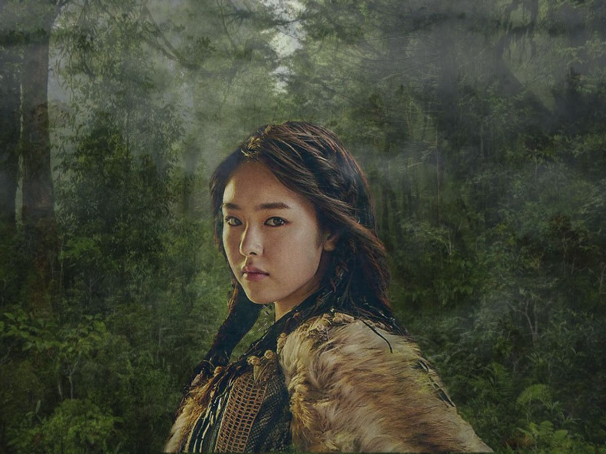

Multimedia ialah adonan dari kata "multi" dan "media". Multi berarti banyak atau lebih dari satu, dan media berarti bentuk atau jenis sarana yang digunakan untuk memberikan informasi. Penggunaan televisi, video, dan film ialah pola penyampaian gosip yang melibatkan beberapa komponen sekaligus, namun yang membedakan aplikasi multimedia dengan yang lain ialah adanya interaksi antara aplikasi dengan insan yang menggunakannya..
SearchAnimasi (tipe kartun, video, dan lain-lain) sanggup digunakan sebagai alternatif untuk memperjelas dan menyebabkan lebih unik dan menarik dalam memberikan informasi. Animasi sanggup juga menyajikan beberapa adonan gambar yang ditampilkan secara berurutan..
Elemen bunyi-bunyian (musik, imbas suara) untuk memperjelas gosip yang diberikan. Bisa juga dengan memakai secara terpisah untuk memperjelas elemen media lainnya..
Multimedia sanggup menyediakan objek yang berupa gambar dalam bentuk foto, grafik, peta dan gambar-gambar lain. Untuk memperoduksi gambar sanggup digunakan kamera digital, mencari gambar dari aneka macam sumber, dan download gambar yang ada di internet..
